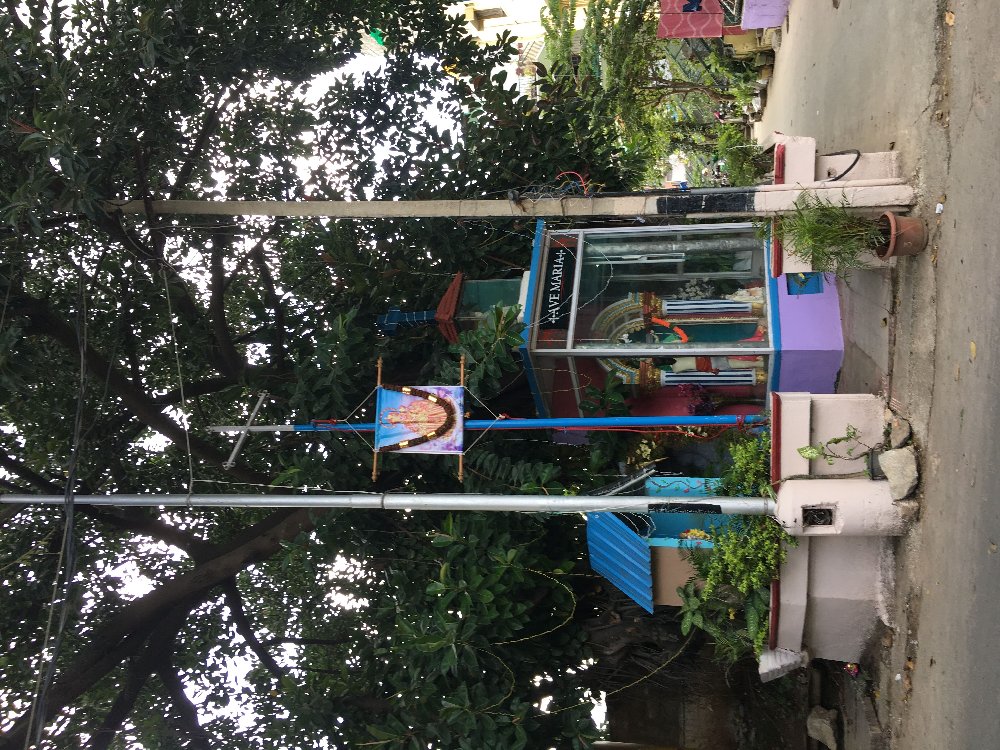

<!doctype html>
<title>Take what you need</title>
  <head>
    <!-- Required meta tags -->
    <meta charset="utf-8">
    <meta name="viewport" content="width=device-width, initial-scale=1, shrink-to-fit=no">

    <!-- Bootstrap CSS -->
    <link rel="stylesheet" href="https://stackpath.bootstrapcdn.com/bootstrap/4.3.1/css/bootstrap.min.css" integrity="sha384-ggOyR0iXCbMQv3Xipma34MD+dH/1fQ784/j6cY/iJTQUOhcWr7x9JvoRxT2MZw1T" crossorigin="anonymous">
     <!-- link CSS file-this.css -->
    <link rel="stylesheet" type="text/css" href="faith.css" />

    <audio autoplay="on" loop="on">
      <source src="sumtrip.mp3">
	</audio>
    
    <style>
        @import url('https://fonts.googleapis.com/css2?family=Roboto+Condensed&display=swap');
        body {
            background: linear-gradient(#e9e9106e, #c82be76e);
                background-repeat:no-repeat;
               background-size:cover;
               font-family: 'Roboto', sans-serif;
        }
    </style> 

</head>

<body style="background-color:#ffffff">
	<font face="Roboto" color="black" size="4">
</body>
    
 
<body>
       
        
        
        
        
        
        
        
        
        
        
        
        
        
        
        
</body>